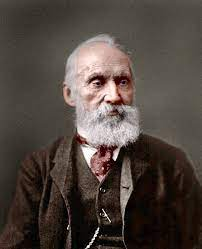

Matter particles – a primer

We claim that what we recognize today as Leptons, Mesons, and Baryons are all basic particles
(i.e. not made out of smaller sub-particles), with a common structure as follows:
A particle is made of a light beam that is trapped to propagate along a closed path.
We will later show how and why this happens, but definitely
this is NOT a new rule in the game.
It will be derived from the above three postulates.
As for quarks, or vector bosons, we don’t need those as basic particles.
The term “photon” does not even appear in this theory (see Appendix C).
Some properties of a system of trapped light can be easily noticed:
A particle is a system that can be at rest (unlike free light beams that always move)
A Particle has non-zero dimensions. No point particles!
At rest, a particle has non-zero energy (mass). No massless particles!
In most cases, a particle has non-zero angular momentum (spin)
A particle can acquire linear momentum, and move through ether at speeds lower than the speed of light
When the particle is in motion, its “motion linear momentum”
\( (P_M) \)
is added evenly to the entire beam resulting in \( E_t^2 = P_M^2 + E_0^2 \)
just as we find in relativity theory (see Appendix A).